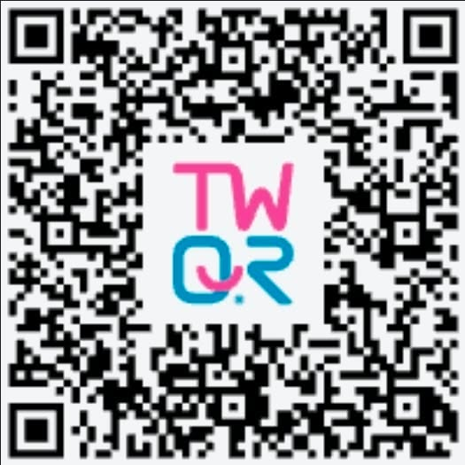

LinLingo is completely free and open source, with no ads, no tracking, no data collection, and no paid tier. The development time and API testing costs come out of my own pocket.
It isn't a company product — it's a tool one person wrote after hours, originally for themselves. If it has saved you some time, you're welcome to buy me a coffee. That's the only ask.
| Method | Best for | Link |
|---|---|---|
| Ko-fi | Credit card / PayPal, works worldwide | ko-fi.com/bill_linch |
| TWQR (Taiwan Pay) | Local Taiwan payments — scan and pay | See the QR code below |

Don't overthink it — pick whatever feels fine. The amount isn't the point; knowing someone uses it is.
| Amount | Roughly |
|---|---|
| NT$60 | A bubble tea — tells me the tool is actually being used |
| NT$150 | A dinner — covers this month's API testing costs |
| NT$500 | Lets me set aside a weekend to fix bugs and add features |
No supporters yet — you could be the first.
After sponsoring you can choose to be listed here (or stay completely anonymous). The first 20 supporters are permanently marked as founding supporters, because backing a project before anyone has heard of it is worth remembering.
The list is also published on GitHub: SUPPORTERS.md
| Goal | Progress |
|---|---|
| NT$1,000 maintenance fund | NT$0 / 1,000 (not reached yet) |
Once it's reached I'll prioritise the biggest known limitation: using UI Automation to reliably identify the active input box, so the translation lands in the right field in Chrome, Discord and other apps that draw their own caret.
| Item | Details |
|---|---|
| API testing costs | Actual translation API calls made while developing and verifying |
| Development time | Lets me set aside weekends to maintain, fix and build |
| Domain and hosting | For linlingo.billlinch.com |
The only small perks: you can be listed, and you get early access to the next test build.